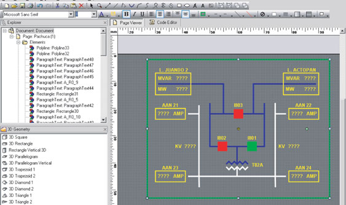

Interaction
Interaction es un sistema para el desarrollo y operación de diagramas interactivos que reflejan en gran medida el mundo real, desplegando de manera dinámica la información obtenida de un sistema de adquisición de datos.
Interaction se puede utilizar para crear aplicaciones de monitoreo, procesos industriales, planos arquitectónicos, mapas, unifilares y en general cualquier aplicación que requiera representar la información de una manera gráfica.
Entre sus usuarios están las compañías de distribución de energía, gas o agua, plantas industriales, sistemas ferroviarios, etc.

Características
- Interfaz amigable:
Opera sobre ambiente Windows.
- Escalable:
Puede trabajar tanto en una sola computadora como en un sistema cliente servidor totalmente redundante soportando varias consolas de vista.
- Flexible:
Puede interconectarse con otros sistemas mediante WebServices, XML, base de datos, comunicación por sockets de TCP/IP o drivers de puerto serie.
- Tecnología de punta:
Diseñado y desarrollado con las últimas tecnologías y herramientas de programación orientada a objetos .Net.
Operación
- Módulo de edición
Permite al usuario final configurar fácilmente sus propios diagramas y asociar los elementos gráficos con la información de campo.
- Módulo de operación
Una vez configurados los diagramas, este módulo se encarga de obtener los datos de campo y actualizar los elementos gráficos.
- Módulo de seguridad>
Controla el acceso de los usuarios. Permite configurar para cada usuario los diagramas que puede ver y las actividades que puede realizar en cada uno de ellos.
Funcionalidad
- Módulo de edición
Permite al usuario final configurar fácilmente sus propios diagramas y asociar los elementos gráficos con la información de campo.
Mediante el empleo de plantillas inteligentes se simplifica la edición de los diagramas ya que el usuario solamente tiene que escoger el elemento que desee de la barra de herramientas, colocarlo en la posición adecuada en el diagrama y configurar el origen de los datos asociados con el elemento.
- Características del módulo de edición
Elementos primitivos: textos, curvas, arcos, elipses, círculos, líneas, polígonos, rectángulos,cuadrados, conectores, mapas de bits.
Herramientas de edición: acercamiento (zoom), posicionamiento,cambio de tamaño, rotación, orden en el plano Z, alineación, reglas, rejilla y guías.
Biblioteca de objetos y plantillas: asignar lógica a elementos, compartir elementos, crear plantillas con lógica predefinida.
Capacidades de dibujo avanzadas: combinación de primitivas para crear un objeto, descomposición de objetos en primitivas, bloqueo de objetos, manejo de capas (layers).
- Módulo de operación
Una vez configurados los diagramas, este módulo se encarga de obtener los datos de campo y actualizar los elementos gráficos.
Por otro lado, el usuario puede interactuar con los elementos del diagrama para generar acciones de control en el mundo real.
Este módulo permite realizar una interfaz prácticamente con cualquier sistema de adquisición de datos.
- Características del módulo de operación
Actualización automática de la información
Posibilidad de desplegar varios diagramas simultáneos
Navegación en un diagrama
Acercamiento (zoom)
Navegación entre diagramas
Atención de eventos de mouse y teclado